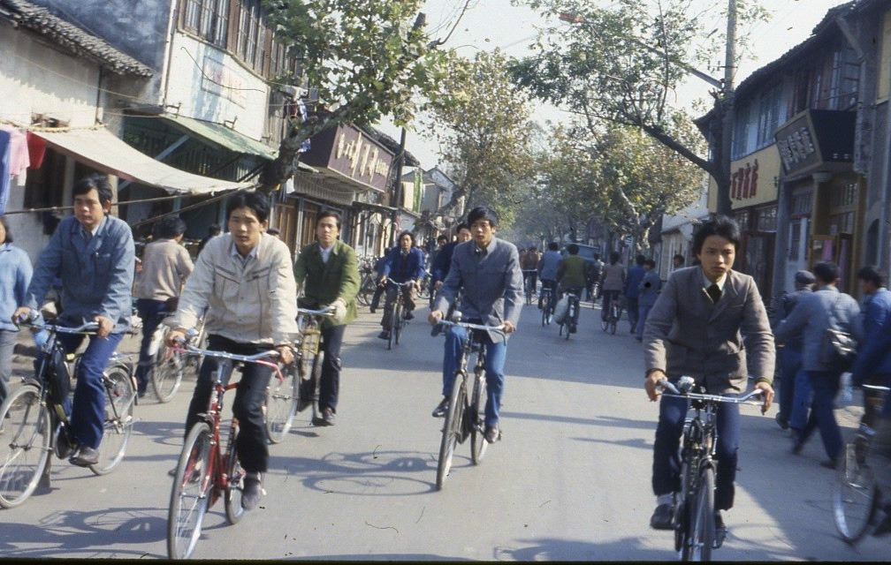
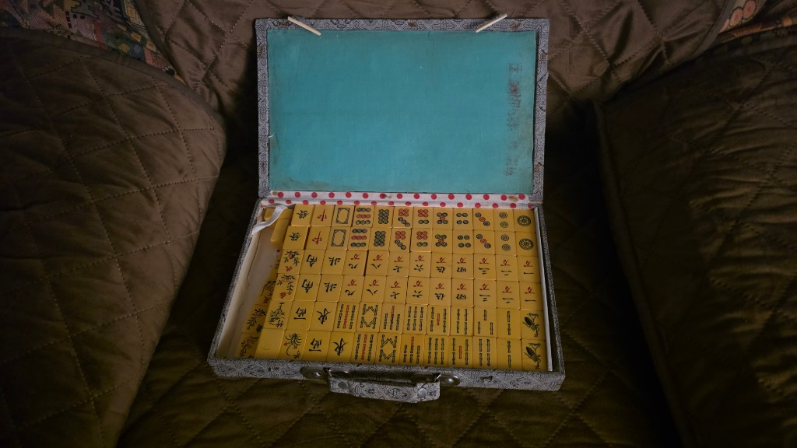

Regole di Mahjong Luciano (Shanghai)
Mahjong Luciano (noto anche come Shanghai Mahjong) è uno dei più famosi ed emozionanti giochi di logica, memoria visiva e pazienza al mondo. Lo scopo del gioco è rimuovere dal tavolo tutte le 144 tessere abbinando a due a due le tessere libere uguali o compatibili.
Il mio primo contatto con il Mahjong è avvenuto durante i miei numerosi viaggi di lavoro in Cina tra gli anni '80 e '90, quando le strade di Shanghai erano piene di biciclette come nella foto che ho scattato all'epoca. In quell'occasione acquistai come souvenir una splendida confezione artigianale del gioco, con le tessere tradizionali conservate nella loro valigetta originale.

Le strade di Shanghai animate dalle biciclette negli anni '80/'90 (foto di Luciano Manenti)

La confezione artigianale di Mahjong acquistata come souvenir in Cina
Questo gioco è in continua evoluzione: nuove funzionalità e miglioramenti vengono aggiunti regolarmente. Se riscontri qualcosa che non funziona come previsto o hai suggerimenti, scrivici a
postmaster@lucianomanenti.com
— il tuo feedback è prezioso!
1. Quando una Tessera è "Libera" (Giocabile)?
Sul tavolo da gioco sono presenti 144 tessere disposte su più piani di altezza. Una tessera è considerata libera e può essere selezionata solo se rispetta entrambe le seguenti condizioni:
- Nessuna copertura dall'alto: Non deve esserci alcuna altra tessera posta sopra di essa (neanche parzialmente al livello superiore).
- Almeno un lato lungo sgombro: Il suo lato sinistro oppure il suo lato destro deve essere completamente libero da tessere adiacenti allo stesso livello.
💡 Consiglio: Puoi premere il pulsante "👁️ Libere" nella barra superiore del gioco per illuminare all'istante tutte le tessere attualmente giocabili!
2. Composizione del Mazzo e Simboli delle Tessere (144 Tessere)
Il set classico è composto da 144 tessere suddivise in Semi numerici, Onori (Venti e Draghi) e Tessere Speciali (Fiori e Stagioni). Nel nostro gioco ogni tessera è arricchita con indici e simboli per un riconoscimento immediato:
| Famiglia |
Simboli e Tessere |
Quantità |
Regola di Abbinamento |
| Cerchi / Pallini (Pin) |
|
36 (4 per tipo) |
Si abbinano solo per numero identico (es. 5 con 5) |
| Bambù (Sou) |
|
36 (4 per tipo) |
Si abbinano solo per numero identico (l'1 è l'iconico Pavone) |
| Caratteri (Man) |
|
36 (4 per tipo) |
Si abbinano solo per numero identico |
| I 4 Venti (Onori) |
|
16 (4 per tipo) |
Si abbinano solo con lo stesso punto cardinale identico |
| I 3 Draghi (Onori Supremi) |
|
12 (4 per tipo) |
Si abbinano solo con lo stesso colore di drago identico |
| I 4 Fiori (Speciali) |
|
4 (1 ciascuno) |
Qualsiasi Fiore si abbina con QUALSIASI altro Fiore! (es. Prugna con Orchidea) |
| Le 4 Stagioni (Speciali) |
|
4 (1 ciascuno) |
Qualsiasi Stagione si abbina con QUALSIASI altra Stagione! (es. Autunno con Primavera) |
3. Lo Schema di Gioco: La Tartaruga
Mahjong Luciano adotta la celeberrima configurazione classica a forma di Tartaruga di Shanghai, composta da 144 tessere disposte su 5 livelli di quota progressivi a formare una piramide terrazzata.
Riconoscimento Immediato dei Livelli (Profili Perimetrali Colorati)
Per consentire una perfetta percezione della profondità e dell'ordine di sovrapposizione delle tessere senza affaticare la vista, ogni piano sopraelevato è incorniciato da un distintivo profilo perimetrale colorato sullo scalino esterno esposto:
- Livello 0 (Base a terra): 87 tessere a contatto con il tavolo, con il classico profilo avorio naturale.
- Livello 1 (1° scalino): Blocco centrale 6×6 (36 tessere), contornato da una linea Verde Smeraldo ad alto contrasto.
- Livello 2 (2° scalino): Blocco intermedio 4×4 (16 tessere), contornato da una linea Blu Zaffiro.
- Livello 3 (3° scalino): Blocco superiore 2×2 (4 tessere), contornato da una linea Rubino / Magenta.
- Livello 4 (Cima): La tessera singola al vertice della piramide, racchiusa da una cornice Oro Imperiale.
🔍 Descrizione Tessera in Tempo Reale: Quando clicchi su una qualsiasi tessera libera, in basso al centro del tavolo compare all'istante un badge informativo che ne mostra il nome completo, l'ideogramma, la famiglia di appartenenza, la regola di abbinamento e il conteggio di quante tessere gemelle o compatibili sono ancora presenti sul tavolo (evidenziando se sono già libere e pronte da giocare!).
4. Garanzia di Risolvibilità e Solver Intelligente
Nel Mahjong tradizionale a distribuzione casuale, molte partite risultano impossibili da completare a causa di blocchi strutturali. In Mahjong Luciano:
- Partite 100% risolvibili: Ogni nuova partita viene generata tramite una simulazione a ritroso che garantisce l'esistenza di almeno una sequenza vincente per ripulire l'intero tavolo.
- Suggerimento intelligente con Solver: Premendo 💡 Suggerimento, il motore AI analizza in tempo reale le ramificazioni e ti consiglia la mossa che mantiene aperta la strada della vittoria.
- Rilevamento in tempo reale dei vicoli ciechi: Spuntando l'opzione "Avvisa se non più risolvibile" (in basso a sinistra), il gioco ti avviserà tempestivamente se una mossa sbagliata rende la partita irrisolvibile, permettendoti di usare subito ↩️ Annulla o di ricorrere a 🔀 Rimescola.
5. Strategie per Vincere
- Parti dall'alto: Le tessere sui livelli più alti bloccano l'accesso a intere sezioni sottostanti; dagli sempre la precedenza.
- Sblocca le file orizzontali lunghe: Le tessere al centro delle file lunghe sono le più difficili da liberare: apri i varchi alle estremità esterne il prima possibile.
- Sfrutta le 4 tessere identiche: Se vedi che tutte e 4 le copie di una tessera sono libere, eliminale tutte subito: non rischierai mai di bloccare combinazioni future.
- Usa gli aiuti: Se ti trovi bloccato, premi 💡 Suggerimento per individuare una mossa o ↩️ Annulla per correggere la strategia. In caso di stallo, il pulsante 🔀 Rimescola riorganizza le tessere residue preservando la partita.
Chiudi